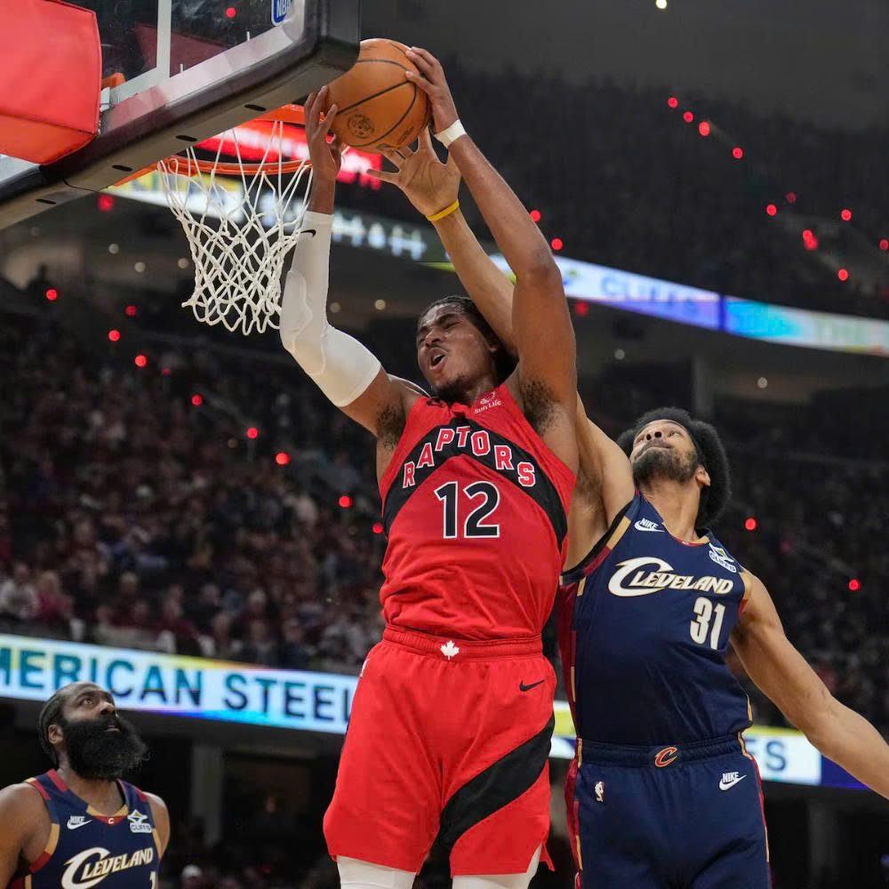

Tân binh Raptors đi vào lịch sử cùng Magic Johnson và Tony Parker sau màn tỏa sáng trước Cavaliers
Bằng màn trình diễn chói sáng với hiệu suất dứt điểm siêu tưởng, chàng tân binh 20 tuổi Collin Murray-Boyles của Raptors đã chính thức ghi danh vào lịch sử NBA Playoffs.
Raptors lấy lại phong độ trước Cavaliers
Toronto Raptors kịp thời lấy lại phong độ khi đánh bại Cleveland Cavaliers 126-104 ở Game 3, qua đó nuôi hy vọng cân bằng series sau hai thất bại trước đó.
Màn tỏa sáng của tân binh Murray-Boyles
Scottie Barnes và RJ Barrett cùng ghi 33 điểm, nhưng điểm nhấn bất ngờ lại đến từ tân binh 20 tuổi Collin Murray-Boyles. Anh ghi 22 điểm với hiệu suất 11/15 (73.3%) và có thêm 8 rebounds chỉ trong 28 phút thi đấu. Đây là một màn trình diễn đáng kinh ngạc từ một tân binh trong playoff.

Gia nhập nhóm hiếm trong lịch sử playoff
Màn trình diễn này giúp Murray-Boyles gia nhập nhóm hiếm trong lịch sử playoff NBA: những cầu thủ dưới 21 tuổi ghi 20+ điểm với hiệu suất trên 70%, bên cạnh Magic Johnson và Tony Parker. Đây là một thành tích vô cùng ấn tượng cho một cầu thủ tân binh.
Kỳ vọng cho Game 4
Raptors sẽ kỳ vọng tân binh này tiếp tục tỏa sáng ở Game 4 để san bằng tỷ số 2-2. Nếu Murray-Boyles có thể duy trì phong độ cao này, anh sẽ trở thành một vũ khí mạnh mẽ cho Toronto Raptors trong những trận đấu sắp tới của playoff.
Tương lai sáng sủa cho Raptors
Sự xuất hiện của những tân binh tài năng như Collin Murray-Boyles cùng hiệu suất ổn định của Scottie Barnes và RJ Barrett cho thấy Toronto Raptors có một future đầy hứa hẹn. Nếu họ có thể tiếp tục duy trì phong độ này, Raptors sẽ là đối thủ đáng gặp trong playoff.